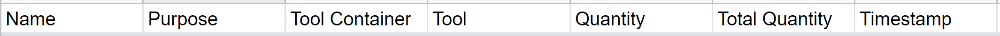
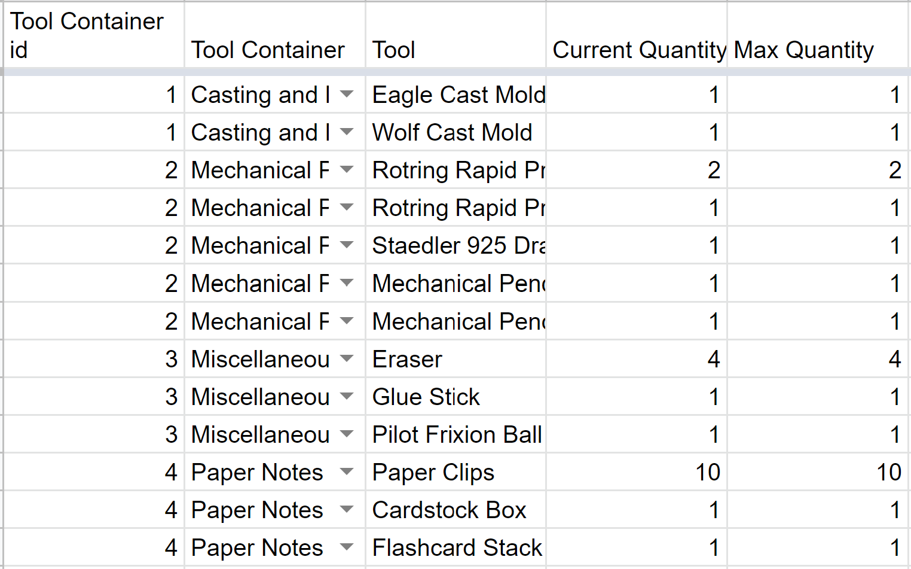
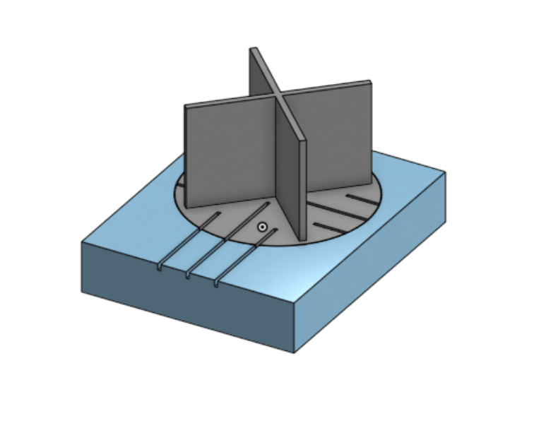
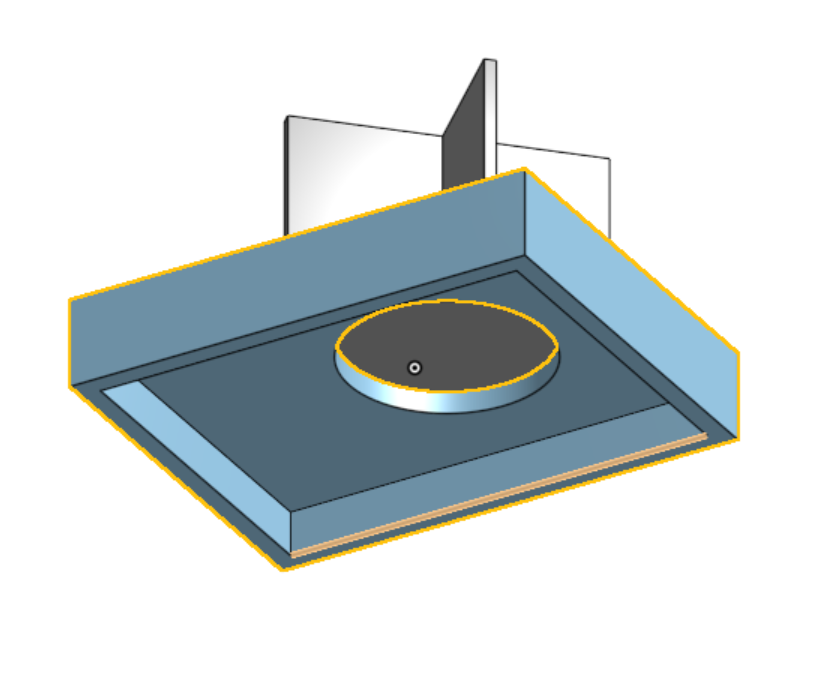
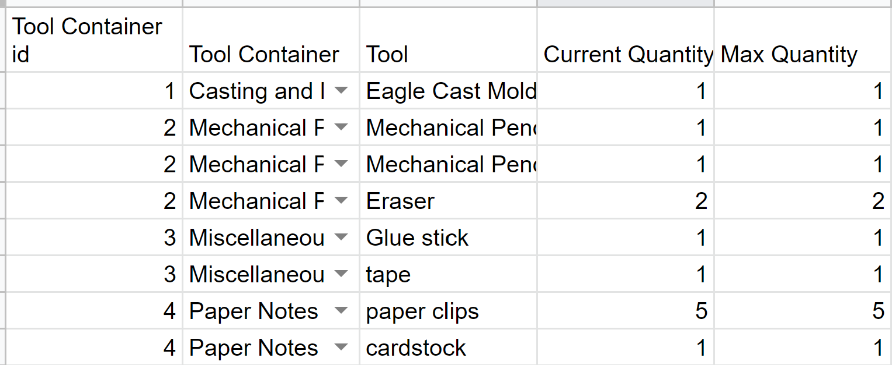

Initial Final Project Idea Proposals
At the beginning of the Intro to Digital Fabrication course I started off with three ideas for my final project. These are listed below:
An automated robot that gets utensils/tools for me:
This robot with the click of a button will get what the person is in need of when they are preoccuppied. This would allow that same person to not have to go several blocks or stories to grab just one object. The robot will have an arm (or something to grab the tool), sensors (to navigate) and a motor.
A drone that will take scenery shots from a distance:
I have always wanted to take scenery shots from above without having to buy a drone or actually go onto such a place out of fear of heights. The user can control this drone through a device (maybe a laptop or a phone). There will need to be a motor that can change speed so the user can determine how much he or she wants to elevate or lower the drone. Finaly, it needs to have a camera to show what you are filming.
A drone that will clean multiple surfaces:
Lets say you have a dirty surface (ie. grill, desk, floor). This drone would only need to be a placed on a surface to work its charm. On the places it goes the drone would spurt out soap that it would later scrub and water. With that there will be no need for tedious effort for cleaning like a roomba.
Since then, I have switched to a more official proposal that being an autonomous desktop organizer.
Final Project Idea Proposal
My goal is to create a desktop organizer that the user wouldn't have to turn or dig through to access certain supplies. This would allow the user to be more efficient when going from task to task without having to waste time spending on searching for just one tool. The basic layout of my Final Project in greater detail is shown here . To take the input from the forms, I created two tables: one to house the person's name and another to house the tool information.


3D Modeling:
The first step to creating my project was to get a base, where a disk housing 4 containers would spin. I ultimately decided to go with 3d printing my project. For the base, I wanted to have the disk be allowed to smoothly fit in the correct position with all the wires being tucked away underneath the base. Initially, on the disk I intended to have 2 grooves to get more storage space but I ended up adding a third groove for stability. Though I would not 3D print this until much later due to being way to nervous that I would mess something up. This would be consequential as many of the pieces I designed take quite a while to print. I believe that this might be the case due to having a lot of supports because I printed the model in an upside down pyramid (smallest section to largest section), so it might've been better to print the opposite way (largest section to smallest section). So to diminish the printing time, I tried to get rid of any unnecessary parts like shortening the walls of the disk.


Configuration and Programming:
By far the most difficult and challenging part of this project was programming. For this project, I planned on using Flask to write a webserver with additional features like SQL to store what person was borrowing or returning what tool. Going into this project, there were many unknowns in the software (Sublime Text) I was using. As I was using CS50 ide previously, everything was modified to suit my needs during the class I had no specifics on what I needed to do to be able to run my program. So a vast amount of time was spent debugging this issue. I tried to see if I needed certain packages in Sublime text and implemented them to see if they work. I later found out that I needed to use pip install Flask after downloading python to be able to use the said element.
Another problem, I came across was after modeling the organizer, I found out that I overestimated how big the 3d print would be and I minimized my table.

To connect this to the website, I utilized Firebase and had an int inputed to represent the cart number.
#include
#include
#include
#include
#define FIREBASE_HOST ""
#define FIREBASE_AUTH ""
#define WIFI_SSID ""
#define WIFI_PASSWORD ""
// Declare the used pins
int dirA = 12;
int dirB = 13;
int pwmA = 3;
int pwmB = 11;
// Declare a Stepper motor with 200 steps
Stepper stepper1(200, dirA, dirB);
// Define FirebaseESP32 data object
FirebaseData firebaseData;
int fireInt = 0;
const int MIN_CARTS = 1;
const int MAX_CARTS = 4;
int cart;
int i;
void setup() {
Serial.begin(115200);
delay(1000);
WiFi.begin(WIFI_SSID, WIFI_PASSWORD);
Serial.print("Connecting to ");
Serial.print(WIFI_SSID);
while (WiFi.status() != WL_CONNNECTED) {
Serial.print(".");
delay(500);
}
Serial.println();
Serial.print("Connected to ");
Serial.println(WIFI_SSID);
Serial.print("Connected to ");
Serial.println(WiFi.localIP());
Firebase.begin(FIREBASE_HOST, FIREBASE_AUTH);
Firebase.reconnectWiFi(true);
Firebase.set(firebaseData, "/LED_STATUS", "WAITING");
Firebase.set(firebaseData, "/LED_STATUS", "WAITING");
// When used Digitally PWM pins require declaration
pinMode(pwmA, OUTPUT);
pinMode(pwmB, OUTPUT);
// Set PWM pins as always HIGH
digitalWrite(pwmA, HIGH);
digitalWrite(pwmB, HIGH);
// Set stepper motor speed
stepper1.setSpeed(60);
}
void rotate90DegressFwd(){
stepper1.step(895);
}
void rotate90DegreesBck(){
stepper1.step(-895);
}
void rotateFwdInSteps(int steps) {
while (steps > 0){
rotate90DegreesFwd();
steps--;
}
}
void rotateBckInSteps(int steps) {
while (steps > 0){
rotate90DegreesBck();
steps--;
}
}
void loop() {
Firebase.get(firebaseData, "/LED_STATUS");
fireInt = firebaseData.intData();
Serial.println(fireInt);
if(fireInt > 1){
rotateFwdInSteps(fireInt - 1);
fireInt = 0;
}
buttonPush = firebaseData.intData();
}
I used an if statement to tell how many rotations there are. If there is a change in cart number by 1 the rotation would have 1 rotation of 90 degrees.
Future Possibilities
There are a lot of practical applications of this design. But I do feel there could be extra add-ons where the form returns a receipt to the user who is either borrowing or returning a tool. This could displaying the history of what they have borrowed or returned. I could also make it so that the user will have to access the website after logging in via post.
Conclusion
Overall, despite not completely finishing my intended design, which unerves me, I find that I achieved quite a bit in this fast paced course. Normally, I would not be able to latch onto any sort of programming language, but after taking this course, I do believe it could be quite an asset for the future.